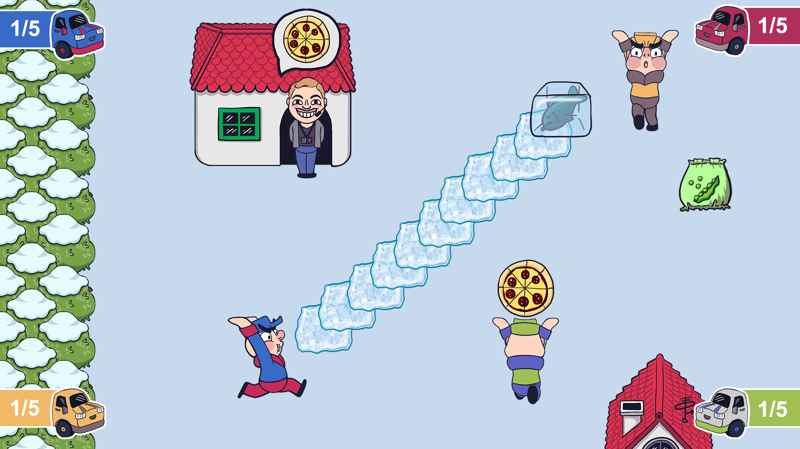

Alright now what is this? Well it is rather hard to explain it and unfortunately I don't have any video footage of the game, but I will still try to explain. This is a game, which was created for the TUM Semester Game Jam in the Winter of 2019. The topic of the jam was to create a game center around the main theme "Freeze" in 48 hours. It took us quite a while to come up with an idea, which we all liked and apparently that was the idea to create a frozen food delivery simulator par excellence. At first we called the game Bofrost Unknown: Battlegrounds, but since there is a very obvious copyright infringement with that name we decided to rename it to Frozen Food Fight.
You play as one of the many good workers, who is trying to deliver the frozen food to his customers. Unfortunately there are 3 other hard working frozen food delivery men who are also trying to deliver the exact same item to the customer. On top of that there are only 4 items and each one exists exactly once. This means that if you have the ordered item you can expect to see a pizza, a bag of beans, a fish frozen solid into a block of ice, or a scoop of icecream flying towards your general direction. You have to make sure to dodge each item, or else you will loose the item which you so desperately want to deliver.
It could also be described as a blend between Overcooked, Mario Party and 4-player Mario Kart. Once the items have been randomly assigned all hell breaks loose and you soon won't be able to run in a straight line.
Creating the game was a lot of fun, since we all couldn't believe how incredibly stupid the idea was. But since we were able to get the basic gameplay down rather quickly, we realized that it was actually a lot of fun to play and could then optimize the gameplay a lot. This meant that there were no known bugs in the final game and everything felt pretty satisfying. We were also able to add different abilities to each item, like an trail of ice on the ground when you throw the block of ice and making the bag of beans behave more like a shotgun than anything else. The pizza was the sniper weap- I mean item, since you could throw it a lot further than the rest of the items. The scoop of icecream would freeze a player if hit for a couple of seconds, which could be really useful in certain situations.
In the end the game was just how we imagined it: fast, chaotic and a lot of fun!
We knew that our game was good but once we saw all the other really amazing games when it came to the final phase of the jam, we thought that we didn't even stand a chance. It was okay for us though, since our whole team was really happy with the final result. Much to our own surprise we were awarded with the 1st place out of over 30 teams! On top of that we also received the award for the best sound!